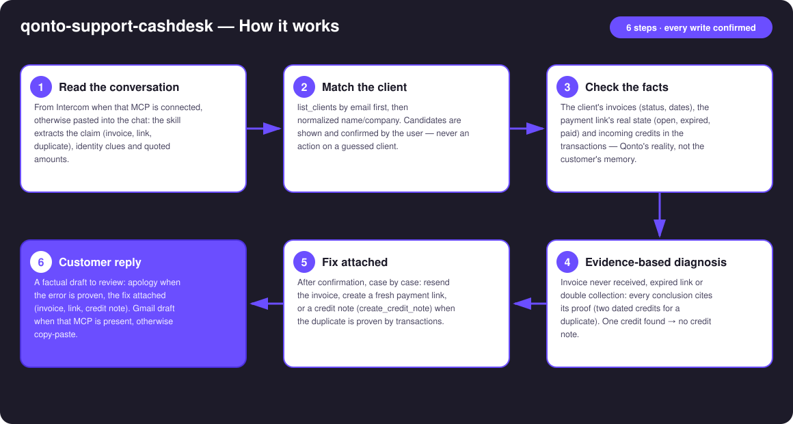
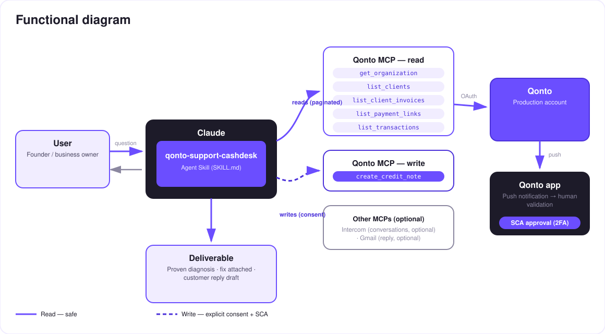

The billing counter of customer support — the skill checks Qonto, proves, acts and drafts the reply.
"I never received my invoice." "The payment link expired." "You charged me twice." Three support messages that pull the founder away from real work — while the answer already sits in Qonto. The skill turns the account into a billing counter:
Pulled from Intercom when that MCP is connected, otherwise pasted into the chat: claim, identity clues and quoted amounts extracted.
list_clients by email first, then name/company — candidates shown and confirmed by the user before anything happens.
Invoices, the payment link's real state, incoming payments in the transactions: every conclusion cites its evidence.
Invoice resent, fresh link, or a credit note when the duplicate is proven — plus the customer reply as a draft to review.
Would someone use this on a Monday morning? Support inboxes fill up over the weekend — Monday morning is exactly when these three messages are waiting.
| Prerequisite | Detail | Required |
|---|---|---|
| Qonto production account | Adapts to any organization — get_organization first, nothing hardcoded | ✅ |
| Country | Universal — clients, invoices, payment links and transactions exist in every Qonto country (FR, DE, ES, IT…); no local tax rule involved | ℹ️ all countries |
| Qonto MCP connected | Official connector (claude.ai / Claude Desktop), OAuth login | ✅ |
| Qonto invoicing in use | Client invoices and payment links issued through Qonto — otherwise nothing to verify | ✅ |
| Intercom MCP | Pull support conversations directly | ⭕ optional — otherwise paste the conversation |
| Gmail MCP | Reply created as a draft (never sent by the skill) | ⭕ optional — otherwise copy-paste text |

emitted_at, not settled_at (1–2 days apart)
Every write confirmed, every credit note proven: reads (solid arrows) are risk-free; resend, link and credit note (dashed) each require explicit confirmation. A credit note is a real accounting document — only proposed with the proof on the table (two dated credits), never as a "commercial gesture" decided by the skill. The customer reply stays a draft: the user sends it. Any refund is a transfer made in the Qonto app (SCA) — the skill never moves money.
| Customer says | The skill checks | Honest outcome |
|---|---|---|
| "Never received the invoice" | Invoice exists? Status? Recipient email correct on the client record? | Found → resend proposed (send_client_invoice, email fixed first if wrong) · no invoice → nothing to resend, said as is |
| "The payment link expired" | Real link status (get_payment_link): open, expired, paid | Expired → fresh link proposed (create_payment_link) · already paid → flagged, no new link |
| "You charged me twice" | Two credits for the same invoice: same amount, close dates — both cited with date + amount | Duplicate proven → credit note proposed (create_credit_note) · one credit → no credit note |
Example (invented): invoice INV-2026-042 for €480, two €480 credits collected one day apart → duplicate proven, a €480 credit note proposed with both dates cited in the reply. Purchase-side duplicates (a supplier charged you twice) belong to qonto-supplier-detective; proactive payment links to qonto-pay-me-now.
| Output | Format | When |
|---|---|---|
| Conversation reply | Diagnosis + cited evidence + recap table (claim → evidence → action → status) | Always — the baseline |
| Customer reply draft | Ready-to-review text; Gmail draft when that MCP is present (never sent by the skill) | Every conversation handled |
| Qonto documents | Invoice resent · payment link · credit note (numbered accounting document) | Case by case, after confirmation |
The ≤ 3-minute demo attached to the PR walks through: the three support messages → the confirmed client match → the duplicate proven in the transactions, then the credit note and the apology draft in one pass → the two other counters at speed. All demo data is invented. The detailed shooting script is kept internal (out of the repo).
| Idea | Effort | Note |
|---|---|---|
| Proactive duplicate-collection detection (periodic scan) | Medium | The sales-side twin of qonto-supplier-detective |
| Per-client dispute history (repeat complaints, average resolution time) | Low | Reuses the client matching |
| Reply in the customer's language, detected from the conversation | Low | Qonto is pan-European |
| Guided refund: preparing the transfer request for SCA approval in the app | Medium | Same security model as qonto-tax-pilot |